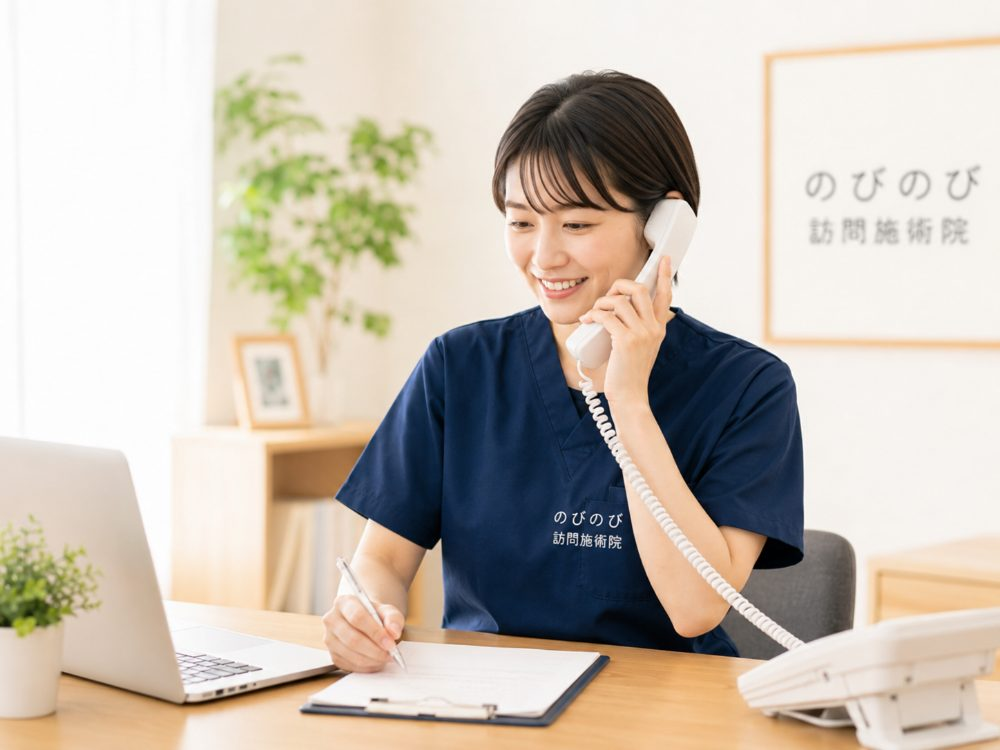

「うちの親はもう九十を超えているけれど受けられるのか」「まだ六十代では早すぎないか」。年齢を気にされて相談される方は多いです。先にお伝えすると、はり・きゅうの医療保険に、何歳からという下限も、何歳までという上限もありません。判断のよりどころになるのは、その方の体の状態と、通院がどれだけむずかしいか。生まれた年ではありません。この記事では、何歳から受けられるのか、条件は何かを順に整理します。
この記事のポイント
訪問鍼灸マッサージに年齢制限はありません。保険で受けられるかを分けるのは、医師が鍼やお灸による治療を必要と認めた慢性的な症状があるか、そしてご自身での通院がむずかしいか、の二点です。要介護認定はいりません。利用が多いのはご高齢の方ですが、条件を満たせば若い世代でも対象になり得ます。費用は年齢で変わらず、1回の施術は総額3,950円。負担割合が1割の方でおよそ395円です。効果には個人差があります。
年齢そのものは、受けられるかどうかの条件ではない
はり・きゅうの医療保険には、対象年齢の決まりがありません。何歳からでなければいけない、何歳を過ぎたら受けられない、という線引きはないということです。八十代・九十代の方はもちろん、百歳を迎えられた方のお宅にうかがうこともあります。ですから「もう歳だから」とためらう必要はありませんし、逆に「まだ若いのに保険で受けていいのか」と気に病む必要もありません。
では何で決まるのか。ひとことでいえば、体の状態と、通院のしづらさです。年齢はその結果として関わってくることはあっても、それ自体が合否を決める条件ではないのです。次の項で、実際にどんな条件を見ているのかを具体的にお話しします。
なお、施術を受ける側ではなく、鍼灸師として働くほうに年齢の上限があるかをお探しの方は、「鍼灸師に年齢制限はある？40代・50代から訪問で働く」をご覧ください。
保険で受けられるかを分ける、二つの条件
保険で受けられるかどうかは、大きく二つで決まります。ひとつは、慢性的に続く痛みなどの症状について、かかりつけの医師が鍼やお灸での治療を必要と認め、同意書を書いてくれること。もうひとつは、ご自身で治療院や病院へ通うのがむずかしいことです。この二つがそろえば、年齢に関わりなく、自宅で保険を使った施術を受けられます。
裏を返すと、若くても条件を満たせば対象になりますし、ご高齢でも通院に問題がない元気な方であれば、まずは通院という選択になります。判断のよりどころが「何歳か」ではなく「今どんな状態か」だと分かると、迷いが少し軽くなるのではと思います。あてはまりそうか分からないときは、状態を聞かせていただければ一緒に確認できます。
対象になりやすいのは、どんな症状？
はり・きゅうの療養費には、対象として想定されている代表的な症状があります。坐骨神経痛をはじめとする神経痛、関節リウマチ、五十肩、腰痛症、頸肩腕症候群、そしてむち打ちの後遺症などです。これらに準じる慢性的な痛みやしびれ、こわばりも、医師が必要と認めれば対象になります。
実際のご相談では、膝や腰の慢性的な痛み、脳梗塞のあとに残った手足のつっぱりやしびれ、冷えを伴う下肢の症状などが入り口になることが多いです。むくみや不眠そのものは療養費の対象ではありませんが、それに伴う痛みやこわばりを医師が必要と認めた場合には、対象となることがあります。気になる症状があれば、まずは対象になりそうかを確かめるところから始められます。
「通院がむずかしい」とは、どのくらいの状態を指すのか
条件のひとつである「通院がむずかしい」は、寝たきりの方だけを指すわけではありません。ひとりでは外出できず付き添いが要る、長い距離を歩けない、階段や段差がこたえて途中で休んでしまう、乗り物での移動が体にこたえる、痛みをこらえないと出かけられない。こうした事情で通院が負担になっている状態も含まれます。
ご本人が「なんとか行けなくはない」と無理を重ねているようなときも、判断に迷う典型です。無理な外出が痛みを悪くしていることもあります。今の通院の様子を具体的に聞かせていただければ、対象になりそうかを一緒に見立てられます。まずは状況を整理するところからで大丈夫です。
要介護認定は受けていなくても大丈夫
よくいただくのが「介護認定を受けていないと利用できないのか」という質問です。ご安心ください。訪問鍼灸マッサージは医療保険のサービスなので、要支援・要介護の認定はいりません。認定を受けていない方も、申請中の方も、介護保険とは切り離して受けられます。前提になるのは、あくまで医師の同意書です。
すでに介護認定をお持ちの方も、もちろん対象です。鍼やお灸の費用は医療保険から計算されるため、介護保険の区分支給限度額とは別枠になります。デイサービスやヘルパーといった介護サービスの枠を圧迫せず、両立できるということです。限度額を気にして施術をあきらめる、という必要はありません。
子どもや現役世代でも受けられるのか
高齢の方の利用が多いサービスですが、対象がご高齢の方に限られるわけではありません。若い方でも、事故のあとのむち打ちの後遺症や慢性的な神経痛などで、医師が鍼やお灸を必要と認め、通院がむずかしい事情があれば、年齢を問わず保険の対象になり得ます。
とはいえ、「通院がむずかしい」という条件が関わるため、実際には体力の落ちてきたご高齢の方や、外出に介助が要る方のご利用が中心です。お子さんやお孫さん世代のことでご相談があれば、症状と通院の状況を聞かせてください。あてはまるかどうかは個々の事情によるので、断定はできませんが、確認はできます。
費用は年齢で変わるのか、いくらかかるのか
費用は年齢では変わりません。決まるのは医療保険の負担割合です。のびのびの訪問鍼灸マッサージは、はり・きゅうの保険で計算し、1回の施術は総額3,950円。このうちお支払いいただくのは負担割合の分だけで、1割の方でおよそ395円です。負担割合はお手元の保険証の記載によります。
たとえば週1回うかがう場合、ひと月の自己負担はおよそ1,580円（1割の方）が目安です。別途の出張費（出張料・交通費）はかからず、エリア内はどこでも同額です。お支払いは月ごとにまとめてお願いしています。内訳はあとからでも確認できます。キャンペーン価格ではなく、公的医療保険にもとづく正規の料金です。
高齢だと体に負担が大きいのでは、という心配
ご高齢の方ほど、「鍼やお灸は体にこたえるのではないか」と心配される声を聞きます。実際には、その方の体力や体の状態に合わせて、刺激の強さや施術の時間を調整します。細い鍼をごく浅く使ったり、心地よいと感じられる範囲でお灸の温かさを届けたりと、無理のないやり方を選べます。
寝たままの姿勢でも、車いすに座ったままでも受けられます。体調のすぐれない日は内容をゆるめる、途中で休むといった調整もできます。感じ方には個人差がありますが、年齢や体力を理由にはじめから遠ざける必要はありません。合う受け方を探しながら進められます。
年齢を重ねても、体のケアを続ける意味
年齢が上がるほど、痛みやこわばりを我慢して過ごしがちになります。ただ、こわばった筋肉を和らげ、血のめぐりを促すことは、動きやすさや眠りの質、気持ちの張りにつながることがあります。もちろん効果には個人差がありますが、体をいたわる時間を持つこと自体に、続ける価値があると考えています。
訪問では、痛む場所だけでなく体全体をみるため、かばって歩いているうちに起きていた左右差や、別の部分の筋力の低下に気づけることもあります。何歳からでも、そして何歳になっても遅すぎることはありません。負担にならない範囲で続けられるよう、生活のリズムに合わせて回数や曜日を決めていきます。
始めるまでの流れと、同意書のこと
まずはお電話かご連絡で、体の状態と通院の状況を聞かせてください。年齢を問わず、二つの条件にあてはまりそうかを一緒に確認します。対象になりそうであれば、かかりつけ医に書いていただく同意書の手続きを、こちらで進めます。ふだん通っている医療機関があれば、その先生にお願いすることが多いです。
同意書が届けば、保険を使った施術を始められます。手続きの流れが分からなくても、一つずつご案内しますので心配はいりません。「高齢だから」「まだ若いから」と迷って先延ばしにせず、今の状態を聞かせていただくところから始めていきましょう。
よくある質問
九十歳を過ぎていても本当に受けられますか？
はい、年齢の上限はありません。慢性的な症状について医師が鍼やお灸を必要と認め、通院がむずかしい状態であれば、九十代でも百歳を超えていても保険で受けられます。体力に合わせて、負担の少ないやり方で施術します。
何歳から受けられますか？子どもでも対象になりますか？
下限の年齢はありません。若い方やお子さんでも、慢性的な症状を医師が鍼やお灸で治療する必要があると認め、通院がむずかしい事情があれば対象になり得ます。ただ実際には通院のしづらさが条件に関わるため、ご高齢の方の利用が中心です。まずは症状と通院の状況を聞かせてください。
介護認定を受けていないと申し込めませんか？
いいえ。訪問鍼灸マッサージは医療保険のサービスで、要介護認定はいりません。認定のない方も、申請中の方もご利用いただけます。認定をお持ちの方でも、介護保険の区分支給限度額とは別枠で受けられます。
どんな症状だと保険の対象になりますか？
坐骨神経痛などの神経痛、関節リウマチ、五十肩、腰痛症、頸肩腕症候群、むち打ちの後遺症が代表例です。脳梗塞のあとに残ったしびれやつっぱり、慢性的な痛みやこわばりも、医師が必要と認めれば対象になります。気になる症状があれば確認できます。
費用は年齢によって変わりますか？
変わりません。費用を決めるのは医療保険の負担割合です。1回の施術は総額3,950円で、お支払いは負担割合の分のみ。1割の方でおよそ395円です。負担割合は保険証の記載によります。
出張費や交通費は別にかかりますか？
別途の出張費（出張料・交通費）はかかりません。対応エリア内であれば、どこにお住まいでも料金は同額です。お支払いは月ごとにまとめてお願いしています。内訳はあとからでも確認できます。
高齢の親に鍼やお灸は負担が大きくないですか？
体力や体の状態に合わせて、刺激の強さや時間を調整します。細い鍼を浅く使う、心地よい範囲でお灸を届けるといった無理のないやり方が選べます。寝たままでも車いすでも受けられ、体調が悪い日は内容をゆるめられます。感じ方には個人差があります。
通院がなんとかできる場合でも相談していいですか？
はい。痛みをこらえて外出している、付き添いがないと通えない、途中で休みながら通っている、といった状態も「通院がむずかしい」に含まれることがあります。無理を重ねる前に、今の通院の様子を聞かせていただければ、対象になりそうかを一緒に見立てます。